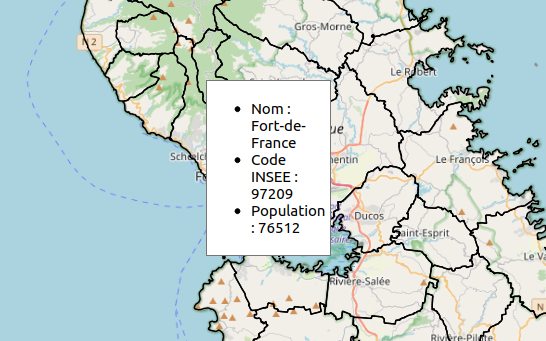
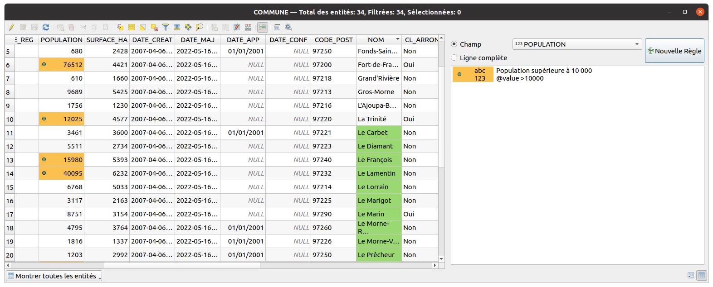
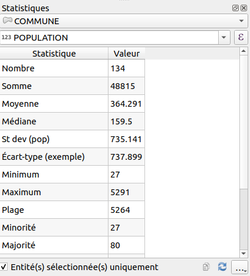

Les outils de visualisation#
Le nommage d'une entité#
Pour tester l'éditeur, nous allons modifier le Nommage d'une entité, accessible depuis les propriétés d'une couche vectorielle, dans l'onglet Infobulle
Cela permet de dire à QGIS quel est l'expression qu'il doit utiliser pour nommer de manière unique les entités. C'est utile notamment :
- dans la table attributaire en mode d'affichage par formulaire
- dans l'outil de recherche
CTRL+Kde QGIS - dans l'outil d'indentification lorsqu'on fait un clic-droit sur la carte
- dans l'éditeur d'expressions, dans la liste déroulante du prévisualisateur
Par exemple, sur une couche COMMUNE, on peut mettre le nom du champ :
- à l'aide du menu déroulant, on peut choisir le nom d'un champ,
NOM. - en cliquant sur l'
epsilonviolet, on arrive dans la fenêtre des expressions de QGIS :- Effacer le contenu à gauche
- Dans le panneau du milieu, aller dans
Champs et Valeurset double-cliquer sur le nom du champNOM. - Remarquer l'ajout dans le panneau à gauche de l'expression suivante
"NOM". - Cliquer sur OK
- Cette expression est équivalente à la première, mais elle est plus correcte syntaxiquement.
Rappels:
- le nom d'un champ est entre guillemet double
"". - une chaîne de caractère entre guillemet simple
'.
Retournons dans la fenêtre des expressions. Nous souhaitons dorénavant afficher le nom de la commune, la chaîne de
caractère : et le code INSEE de la commune.
* Effacer le contenu à gauche
* Dans le panneau du milieu, aller dans Champs et Valeurs et double-cliquer sur le nom du champ NOM.
* Contrairement aux noms des champs qui sont entre guillemet double "", les chaînes de caractères sont entre guillemet simple ''
* Pour concaténer, on peut utiliser ||, + ou la fonction concat()
* Une solution possible concat("NOM", ' : ', "INSEE_COM")
Tip
Pensez bien à lire la documentation de ces fonctions de concaténations, surtout sur la gestion des valeurs NULL.
Tip
Une fois le nommage d'entité effectué, vous pouvez lancer une recherche
dans la couche via le champ de recherche rapide en bas à gauche
(raccourci CTRL+K)
Les infobulles#
Comme on l'a fait pour le nommage des entités, on peut définir l'infobulle de la couche
avec des expressions QGIS. On utilise cette fois-ci du HTML pour la mise en forme.
- Pour activer les infobulles sur la carte, menu
Vue▶Afficher les infobulles. - Puis retourner dans les propriétés de la couche vecteur, onglet
Affichage, blocInfobulle HTML.
Rappel succinct sur du HTML pour faire une liste à puce :
1 2 3 4 5 6 7 8 | |
Tip
Vous pouvez utiliser un éditeur de code HTML en mode WYSIWYG
par exemple https://bestonlinehtmleditor.com
- Les balises
<h1></h1>,<h2></h2>,<h3></h3>représentent des titres, en commençant par le plus important. En anglais header. <p></p>est un paragraphe<ul></ul>est une liste à puce non ordonnée. En anglais unordered list.<li></li>est un élément dans une liste. En anglais list item.
NB: Il est possible de personnaliser l'affichage de l'infobulle à l'aide de CSS.
Exemple d'une infobulle QGIS :
1 2 3 4 5 | |
[% ... %] permet à QGIS de reconnaître qu'il s'agit d'une expression qu'il faut évaluer au sein d'un autre bloc de texte.

La table attributaire : la mise en forme conditionnelle#
Pour retrouver plus facilement des objets dans une grande table attributaire, on peut utiliser la fonctionnalité de QGIS de mise en forme conditionnelle des champs ou des lignes de la table.
Le principe est de fournir une ou plusieurs règles, via une expression QGIS, et d'y associer un style de champ ou de ligne. Par exemple
- Pour le
NOMdes communes :@value LIKE 'Le%' - Pour la
POPULATION:@value > 10000

Le panneau statistique#
Dans la barre d'outils Attributs, il existe un outil de statistiques sur un champ.
Il fonctionne à l'aide d'une couche vecteur en entrée ainsi que d'un champ de cette couche ou une expression.
